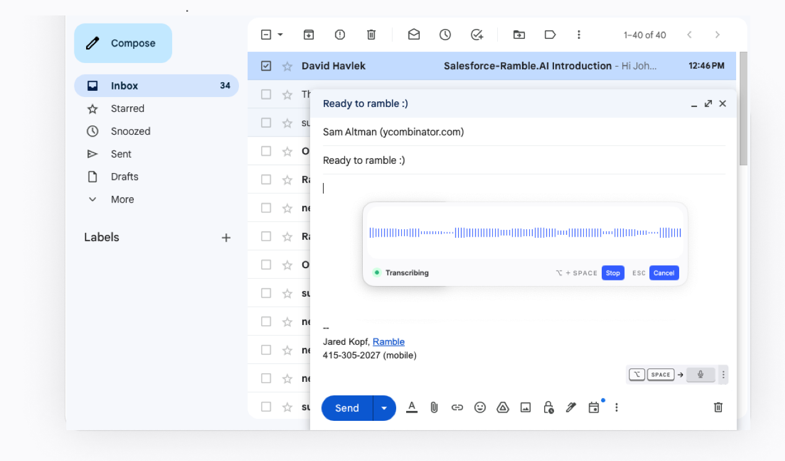
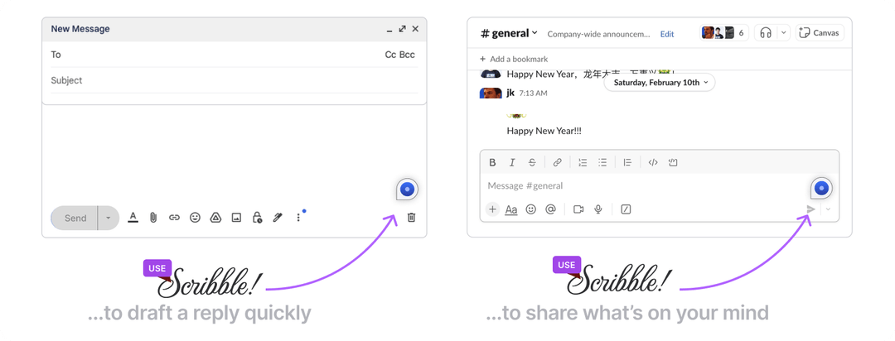

People love to talk instead of type on their phone. What if you could do that on your PC?
We created Scribble so you can talk instead of type and there is a subset of PC users that absolutely love it. My favorite user story is they went out and replaced their windows machines with Macs just so they can use Scribble to get their work done. I wouldn’t suggest going that crazy – but excited to have users that really want to talk!


Loom tour: https://www.loom.com/share/fe91ad2048b54633826e5ab001f9fa34?sid=3217afef-dfb2-45c9-9a1b-47c2bca9e2f4